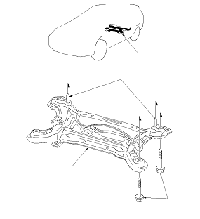

Subframe Replacement - Rear
Rear Subframe Torque
NOTE:
When installing, align both guide pins on the subframe with both reference holes in the body.
After removing the subframe mounting bolts, be sure to replace them with new ones.
